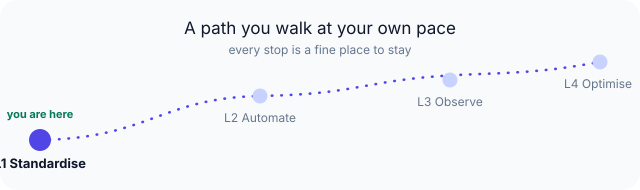

Why teams are reaching for this now¶
A lot of engineering teams are having the same conversation right now. One instinct is to pause AI assistants until there's a policy; another is to keep shipping with them and hope review catches what matters. Both are understandable, and both tend to get uncomfortable over time.
There's a calmer third path, and it's the one that also happens to hold up when the codebase gets big and the team gets busy: keep your team's AI work aligned, deliberately and lightly.
The quadrant nobody tooled¶
Think about code quality as a 2×2. One axis: individual versus team. The other: pre-AI versus AI-assisted.
| Pre-AI | AI-assisted | |
|---|---|---|
| Individual | Linters, IDE hints, code review — mature, twenty years of tooling | Copilot-class autocomplete, per-developer prompts — maturing fast |
| Team | Style guides, architecture review boards, shared conventions — mature | — empty — |
Three of the four quadrants have decades of tooling. The fourth — keeping a team's AI-assisted work coherent — has almost none. That empty quadrant is where the cost is accumulating, and it stays invisible until a refactor, an incident, or a new hire walks into it and asks why six files solve the same problem six different ways.
AI engineering alignment¶
The discipline that fills that quadrant needs a name, because you cannot budget for a problem you cannot say out loud. Call it AI engineering alignment: the practice of keeping every team member's AI assistant working from the same conventions, the same workflow, and the same quality bar — so that the team's output is coherent even though no two prompts are ever identical.
It is not prompt engineering; that is an individual craft. It is not an MLOps concern; no models are being trained here. It is a software-process discipline, and it lives in the gap between "we adopted AI" and "we can defend how we adopted AI." Naming it matters because the unnamed version gets filed under "developers will sort it out" — and they will, badly, one inconsistent merge at a time.
Locally optimal, globally incoherent¶
Here is the failure mode without the discipline. Each developer's AI assistant is, in isolation, doing a good job — passing the local tests, matching the file it can see, shipping the feature on time. Every session is locally optimal. But no single session can see the team's conventions, the architecture decisions made in last quarter's review, or the security baseline that currently lives in one senior engineer's head. So the aggregate is locally optimal, globally incoherent: six valid-looking implementations of one pattern, three subtly different error-handling styles, an architecture that drifts a degree with every sprint until the map no longer matches the territory.
This is not a model-capability problem — it is a context-distribution problem. Frontier models degrade past roughly 150 distinct instructions, so you cannot fix incoherence by pasting the entire standards document into every prompt; the context has to be earned per phase, not dumped in wholesale. (Claude Code Coach treats that 150-instruction wall as a hard budget; the full explainer is a follow-on.) The teams that win the next two years are not the ones with the best prompts. They are the ones whose assistants share a spine.

The forcing function is AI velocity itself¶
If the engineering argument feels deferrable, the adoption curve will close the window for you. AI assistants are being rolled out across teams now, not in some future quarter — and every unaligned session compounds the empty-quadrant cost faster than a human-paced team ever accrued it. Drift that used to take a year of hand-written code now lands in a single sprint of AI-accelerated merges. The teams that align early pay a one-week adoption cost while the divergence is still small; the teams that wait pay it back as a refactor whose size grows with every AI-assisted commit.
That is the real "why now": AI makes the empty quadrant expensive on the timetable of your own adoption — the faster you ship with AI, the faster unaligned drift accrues, and the more a late correction costs.
What this looks like in practice¶
Keeping AI coding aligned is not a committee and not a moratorium. It is conventions distilled into the assistant's context within a hard budget, a workflow every developer's assistant follows the same way, and quality gates that run before code review rather than after it. It is reversible — one revert removes it — and it is local-first, so no source code leaves the workstation to make it work. The maturity model lays out how far an organisation can take that and exactly what each step commits to. The full thesis, in engineering register rather than this leader-register summary, lives in the project's internal Vision document.
The argument is not "AI coding is dangerous, slow down." It is the opposite: AI coding is fast, and unaligned speed at team scale is how you arrive at the wrong place sooner. Alignment is what turns individual velocity into team progress.
What we are NOT¶
Naming a category invites overclaiming, so the boundaries are explicit:
- We are NOT an AI model or a coding assistant. 3C governs the assistants you already use; it does not replace Claude Code, Copilot, or Cursor.
- We are NOT a compliance product. 3C is a developer-productivity and standards-alignment framework; regulatory/compliance positioning is a separate, future business case (parked — see
strategy/parked/compliance-business-case.md), not part of L1–L4. - We are NOT a cloud service that ingests your code. 3C — Claude Code Coach — is local-first; source code never leaves the developer workstation to make it work.
- We are NOT a productivity tracker. What 3C measures at L2+ is process adherence and quality, anonymisable and opt-in; it is not individual-developer surveillance.
- We are NOT a one-time setup. 3C is a maturity model — the value compounds because each retrospective writes the next rule; a frozen install is an abandoned one.
What we're learning
This "why now" framing comes from real adoption conversations — yours may land differently. If the velocity pressure isn't what you're feeling, tell us what is: start a discussion.